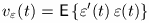
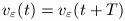
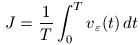

| DirectSD Toolbox |
  |
Stochastic analysis
If the input w is a stationary stochastic vector signal,
the error ε is a periodically non-stationary process
and its variance

where E{·} denotes mathematical expectation,
is periodic with respect to t

where T is the sampling period. Therefore, to evaluate
continuous-time behaviour of a periodically nonstationary system
it is reasonable to employ the average variance
over continuous time:

It can be shoen that this value equals the square of
the generalized H2-norm of
the sampled-data system. Therefore, it can be computed
using the function sdnorm
F = tf(1, [1 1 0]);
sys = [F F;-F -F];
T = 0.1;
K = zpk ( 0.45, -0.89, 380, T );
av = sdh2norm (sys, K)^2
av =
8.2180e-004
or, for a system with a scalar controller,
by means of the function sdh2norm:
av = sdh2norm(sys, K)^2
av =
8.2180e-004
References
[1] Rosenwasser, E.N., and B.P. Lampe,
Computer Controlled Systems: Analysis and Design with
Process-orientated Models. London: Springer-Verlag, 2000.
|
|
Integral quadratic error | |
Hinf norm |
|
Copyright © 1999-2006 K. Polyakov.